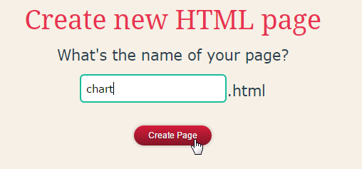
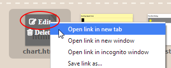
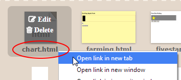
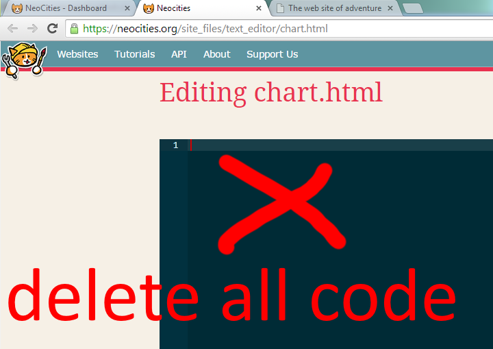
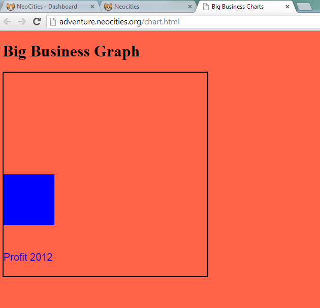
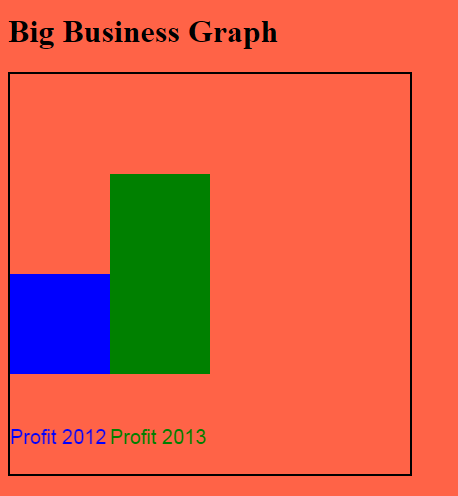

Big Business Charts
Profits are up! Let's make a chart so we can show our investors how clever we are.
(This activity uses JavaScript and jQuery.)
What skills do I need?
This is best if you've tried HTML, CSS and maybe even a little bit of JavaScript before.
By now you should also know how to create a new page in Neocities, view it and open it for editing.
Part 1: Set up Neocities
Make a new page:

Call it chart
Open a tab to edit the new page.
Open a tab to view the new page.
In the editing tab, delete all the code.
Copy and Paste this code instead:
<!DOCTYPE html>
<html>
<head>
<meta charset='utf-8'>
<script src="//ajax.googleapis.com/ajax/libs/jquery/2.1.1/jquery.min.js"></script>
<title>Big Business Charts</title>
<style>
/*This is the start of the CSS*/
body {
background-color: tomato;
}
canvas {
border: 2px solid black;
}
/*End of the CSS*/
</style>
</head>
<body>
<h1>Big Business Graph</h1>
<canvas width="400px" height="400px"></canvas>
<script>
//here comes the JavaScript
//make a variable and point it to the canvas in the HTML
var myCanvas = $("canvas");
//this mysterious code gets a "drawing context"
//Let's name it 'ctx' short for "context"
var ctx = myCanvas.get(0).getContext('2d');
//ctx lets us draw:
ctx.font = "20px Arial";
ctx.fillStyle = "blue";
ctx.fillRect(0, 200, 100, 100);
ctx.fillText("Profit 2012", 0, 370);
</script>
</body>
</html>
CHECK that you copied all the code. Save the page, then view it.

If it looks like this, you're ready to start!
What is a canvas?
We already know how to include images in our website.
A "canvas" lets us actually draw our own pictures, with code.
Why would anyone want to draw with code? Have a think about it during the activity.
OK, what are we drawing?
We need to show investors that profits are UP!
We want to make a bar graph that shows profits over the last 3 years. Each year, the bar should get bigger.
That's how you impress people in big business.
Part 2: more bars
The code is drawing one blue rectangle and one message on the canvas.
Guess which line is making the rectangle appear.
(It's one of the lines that starts with ctx. If you don't know, try changing some of the numbers around and see which part of the page changes.)
- Work out what is drawing the blue rectangle.
- Add a new rectangle next to the first one. You will need to change the numbers to change where the rectangle appears – you won't see it if it's drawn right over the old one.
CHECK: You have two bars.
Part 3: different colors
You can tell drawing context what color to draw with.
So far, we told it to use 'blue'
It will use that color until you change it to a new one.
- Make your new bar a different color from the first one.
- Add a new label that says "Profit 2013"
Part 4: magic numbers
A magic number is a number in your code that is mysterious and hard to understand.
Magic numbers are a bad thing. Right now, our code is full of magic numbers.
We can replace any number in JavaScript with a variable instead.
This is the code that draws the first bar:
//you already have this code!
ctx.fillRect(0, 200, 100, 100);
Let's replace ONE of those numbers with a variable.
//this does exactly the same job, but it's easier to understand.
var width = 300;
ctx.fillRect(0, 200, 100, width);
We created a new variable called height, and we set it to 300. Then we used the variable in place of the number.
- Create four variables: x, y, width and height.
- Use the variables instead of magic numbers to draw the blue rectangle.
Do you think the code is easier to understand now?
Part 5: bar heights
We want to show profits going up like this:
Notice how the bars all line up on the bottom edge? We can use some math to do this automatically:
var y = 300 - height; //what does this do?
Make a graph that shows profits going up each year.
That's the end.
One last thing: What's an advantage to drawing a graph with code, instead of drawing it by hand in a paint program?
(What if we wanted to update the graph every day? or even every second?)